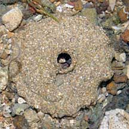

|
|
| shelled snails text index | photo index |
| Phylum Mollusca > Class Gastropoda > Family Naticidae |
| Sand
collars of moon snails Family Naticidae updated Aug 2020
Where seen? These frilly edged flat spirals are sometimes numerous on sandy shores, as well as seagrass areas. What is a sand collar? The sand collar is the egg mass of a moon snail. A moon snail lays her eggs at night. The eggs are laid singly in capsules which are embedded in a matrix of sand grains - a combination of mucus and sand which forms a gelatinous sheet that hardens. She lies at the center of the collar as she creates it, so the hole in centre of the collar may give an indication of the size of the mother snail. It's alive! Although the collar feels hard, plasticky and appears dead, each collar can contain thousands of living eggs. When the eggs hatch, the collar disintegrates. Thus, an intact collar has living snails in it! Please don't damage the sand collars. Unique collars: Can we tell which kind of moon snail laid the sand collar? One study suggests that each species of moon snail lays a consistently distinctive sand collar. With differences in the overall shape and size, number of coils, capsule size and packing density in different species. |
 Pulau Sekudu, Jul 03 |
 Chek Jawa, Nov 04 |
 Pulau Sekudu, Jul 08 |
| Sand collars on Singapore shores |
On wildsingapore
flickr
|
Links
|